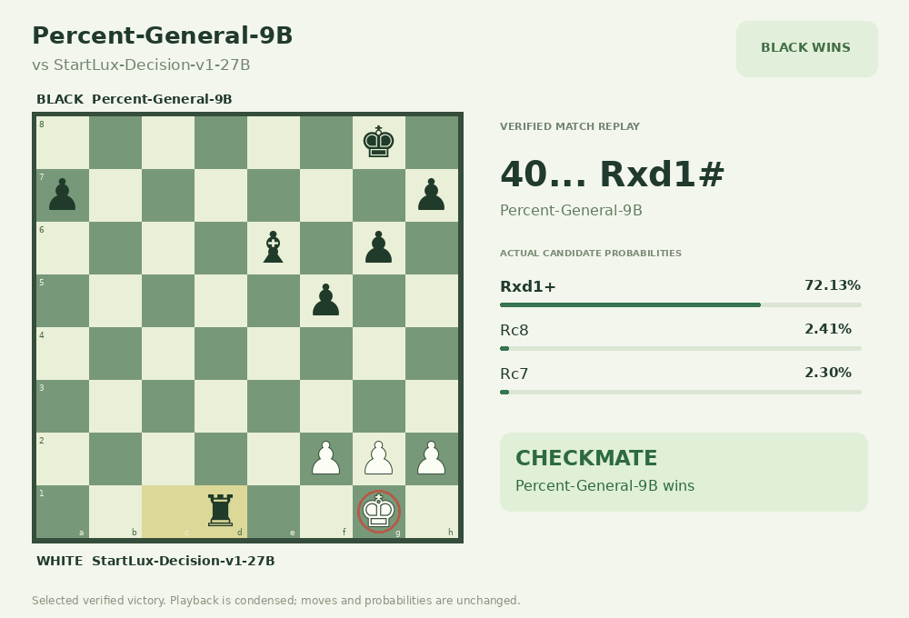

Percent-General-9B
Selected recorded decisions
Five selected successful records against Jev 1.13.0 and one chess win against StartLux-Decision-v1-27B. These exploratory selections are not an overall win-rate estimate or a claim of general superiority. Models choose from candidates using structured states. Shopping and support use simulations; the page replays recorded actions.
Download all six GIFs · Full exploration results and project record checks


Known chess input limitation
Chess retains the original rich input protocol. Another game in the source run exposed an incorrect immediate-capture description, and upstream notation reduces mate # to check +. Both models share the input-construction rules and complete legal candidates. Legal move replay confirms this game's checkmate, not the accuracy of every input description. The corrected capture-description protocol has only CPU checks and has not been retested in GPU matches. This is a recorded example, not a standard chess-strength ranking.
The interactive replay retains the original Chinese action labels. GIF captions and these summaries are in English. Candidate distributions are original API outputs, not calibrated win probabilities. Rule-only steps are marked separately. Artwork attribution and licenses